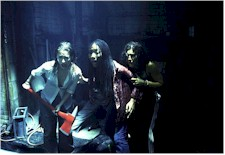

Contents | Features | Reviews | News | Archives | Store |
 |
|
| Movie Credits | Buy It! |
I Still Know What You Did Last Summer
Review by Eddie Cockrell
Posted 20 November 1998
| Directed
by Danny Cannon Starring Jennifer Love Hewitt,
Brandy, Written by Trey Callaway |
"No one deserves a vacation more than Julie James" is one of the tag lines for this sequel to the successful 1997 teen slasher movie I Know What You Did Last Summer, but without the services of currently hot screenwriter Kevin Williamson (Scream, Scream 2, "Dawson's Creek") -- or, it seems, anyone else behind the camera of the first installment -- it's the audience that could use some time off from the tired formula of teens in peril.
A year after causing the accidental death of fisherman Ben Willis and watching in horror as her friends were brutally slaughtered by a mysterious madman in apparent retribution, Julie James (Jennifer Love Hewitt) remains haunted by the traumatic events to the point where she's struggling in her first year of college -- so much so that she sleeps during the day and keeps a huge carving knife in the drawer of her nightstand. Persuaded by her best friend Karla Wilson (Brandy) to accompany her and boyfriend Tyrell Martin (Mekhi Phifer) on an all-expense-paid vacation to the Bahamas won in a radio station contest, Julie discovers that the menace has followed her to paradise. With the help of would-be suitor Will Benson (Matthew Settle) and returning boyfriend Ray Bronson (Freddie Prinze Jr.), Julie fights to survive and understand the true meaning of the awful threat.
The kind of movie where the female leads hold hands while talking about boys, I Still Know... preserves the original's teenaged universe by making every adult in sight either one-dimensional or cartoonish. The latter is best illustrated by the presence of the Re-Animator himself, Jeffrey Combs, as the nervous and hostile desk clerk at the suspiciously deserted resort (his Bugs Bunny-ish dental appliance may be the funniest thing in the film). But rather than run with the concept of crazy adults, the filmmakers seem more interested in creating a serious backstory for Julie's unease (the actress told at least one talk show the movie was supposed to be taking place "in my character's head") -- a conceit made all the more implausible by the ironic fact that Love Hewitt seems too sensible and spunky of a young woman to be in such an absurdly vulnerable state. And the movie's central plot point, a geographical quiz that involves the capital of Brazil, is insulting fraudulent.
As written, the supporting roles give Love Hewitt little or no help. Brandy remains an annoyingly chipper presence profoundly out of place in a horror movie, while Phifer (the agent for cataclysmic change at the end of last season's “Homicide: Life on the Street”) continues to believe that a perpetual scowl passes for acting. Benson is capable in a pivotal role, while the underused Prinze remains the one character of real interest.
Nevertheless, the achingly familiar template is enlivened by a few pleasant surprises that genre-savvy moviegoers will clutch at like life preservers. Although he shuffles off the mortal coil far too soon, Combs' character oversees a nifty island getaway that mixes elements of Stanley Kubrick's The Shining, John Carpenter's Halloween (a reference massaged by John C. Frizzell's score) and ABC's impenetrable but provocative update of "Fantasy Island." While perfunctory, the direction of Danny Cannon (The Young Americans, Judge Dredd) and facile camerawork of Vernon Layton (The Englishman Who Went Up a Hill, But Came Down a Mountain) conspire to create a fitfully atmospheric and threatening tone, particularly during a climactic storm. And Bill Cobbs (The Brother From Another Planet, The People Under the Stairs) lends additional veracity as Estes, a hotel worker.
According to the filmmakers, the better of two possible scenarios was utilized for this film's narrative framework. That makes the inevitable third chapter in the ongoing saga of the killer fish stick guy a dispiriting proposition indeed. Beyond an initial flurry of pre-holiday thrill-seekers, audiences are unlikely, as the ads scream, to "get hooked again."
Be sure to read the review of I Know What You Did Last Summer.
Contents | Features | Reviews | News | Archives | Store
Copyright © 1999 by Nitrate Productions, Inc. All Rights Reserved.